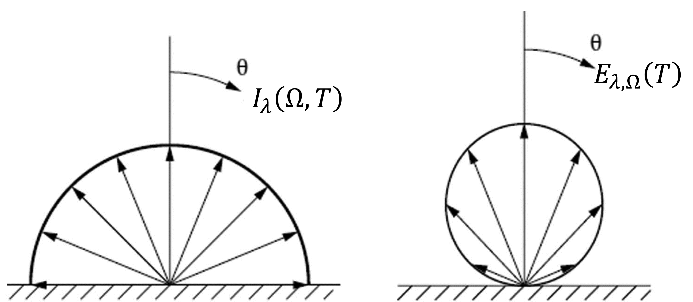

6. Radiación Térmica#
6.1. Introducción a la Transferencia de Calor#
A nivel molecular, los átomos en la materia siempre están vibrando. La magnitud de estas vibraciones está caracterizada estadísticamente por la temperatura:

Consideremos un sólido extendido con una diferencia de temperatura, \(\Delta T\), entre sus extremos, tal que el lado izquierdo tiene una mayor temperatura que el lado derecho

Debido a la diferencia de temperatura, la vibración molecular en el lado izquierdo es mayor. Esta energía cinética es transmitida a través del material hacia el lado derecho.
Definimos como calor, \(Q\), a la energía térmica intercambiada entre dos medios cuya diferencia de temperatura es \(\Delta T\). A mayor \(\Delta T\), mayor es el intercambio de calor, matemáticamente:
La taza de transferencia de calor:
corresponde al calor tranferido por unidad de tiempo.
Por último, definimos como flujo de calor:
a la taza de transferencia de calor por unidad de área.
Existen tres mecanismo de transferencia de calor:
Conducción de calor
Convección de calor
Radiación

6.1.1. Transferencia de calor por conducción#
Definimos como conducción de calor al calor transferido a través de un material en reposo. El mecanismo generalmente se asocia a sólidos, donde el calor es transferido a travéz de la red atómica del material. Sin embargo, la definición también incluye líquidos y gases en reposo. En este caso, las moléculas se mueven aleatoriamente, de manera tal que la velocidad neta del fluido es cero.
Matemáticamente, para un material de espesor \(t\) y diferencia de temperatura \(\Delta T\), la taza de transferencia de calor por conducción a través de una superficie \(A\), es:

La conductividad térmica, \(k_c\), es una propiedad del material que varía según la temperatura.

En su forma diferencial, \(\dot{Q}_\mathrm{cond}= - k\nabla T\), y para el caso unidimensional:
A partir de esta fórmula podemos deducir expresiones para taza de transferencia de calor por conducción según la geometría:

Notar que en los tres casos podemos expresar la taza de conducción de calor en la forma:
donde, \(R_\mathrm{cond}\) (K/W) es la resistencia térmica asociada al mecanismo de conducción.
6.1.2. Transferencia de calor por convección#
Definimos como convección de calor al calor transferido a través de fluidos en movimiento. El movimiento de un fluido puede ocurrir naturalmente, debido a los efectos de flotación a raíz de los cambio de densidad con la temperatura; o de forma inducida, como por ejemplo mediante un ventilador.
A partir de esto, clasificamos la transferencia de calor por convección, respectivamente, como:
convección natural
convección forzada.

La convección de calor esta asociada al contacto de fluidos con una superficie, \(A\). Así, independiente del mecanismo de convección de calor (natural o forzada), expresamos la taza de transferencia de calor por convección como:

Notar que la taza de transferencia de calor por convección puede ser expresada en la forma:
donde \(R_\mathrm{conv}=1/hA\) es la resistencia térmica asociada a la convección de calor.
A diferencia de la conducción de calor, el coeficiente convectivo, \(h\), no es una propiedad del fluido. Esto porque no solo depende de las propiedades del fluido (densidad, viscocidad y conductividad térmica, entre otras), sino que además depende de condiciones externas, como la velocidad del flujo, la diferencia de temperaturas, y la geometría del cuerpo sometido a convección de calor.
El coeficiente convectivo se determina a partir de relaciones expresadas en términos del número de Nusselt, \(\mathrm{Nu} = \frac{hL_c}{k_f}\), donde \(L_c\) es una longitud característica y \(k_f\) es la conductividad térmica del fluido. En la mayoría de los casos, las relaciones para el número de Nusselt para cada caso se determinan experimentalmente.
Comúnmente, los valores para el número de Nusselt se encuentran dentro de los siguientes rangos:
Convección forzada, \(\mathrm{Nu} \sim 5 - 1000 \)
Convección natural, \(\mathrm{Nu} \sim 0 - 100\)
6.1.3. Transferencia de calor por radiación#
Definimos como radiación de calor al calor transferido por ondas electromagnéticas.
Aquí también, el calor fluye desde la fuente de mayor temperatura all sumidero de menor temperatura. Sin embargo, a diferencia de la convección y conducción, la transferencia de calor por radiación no requiere de un medio y, por lo tanto, puede recorrer grandes distancias.

En general, la transferencia de calor depende de las propiedades ópticas de la fuente y receptor. Sin embargo, considerando un caso simplifado, podemos definir la relación en base a la emisividad promedio del emisor, y absortividad promedio del receptor:

Sin embargo, como veremos en este capítulo, esta regla no es general. La mejor forma de entender esta fórmula es estudiando su origen.
6.2. Fundamentos de la radiación térmica#
Las vibraciones a nivel molecular también inducen polarización en la materia. Esto es similar al fenómeno de polarización inducida por ondas electromagnéticas estudiada en la unidad 3. Estos dipolos inducidos térmicamente, oscilan constantemente generando campos electromagnéticos que se propagan en dirección radial.

En la siguiente animación podemos ver el proceso de emisión de ondas electromagnéticas de un dipolo oscilatorio. El mapa de colores representa la intensidad del campo magnético, es decir \(|\vec{H}|\), donde rojo y azul corresponden, respectivamente, a los valores máximos y mínimos.

6.2.1. Poder de emisión#
Un cuerpo a temperatura \(T\) emite ondas electromagnéticas en todas las direcciones y en un espectro de longitudes de onda. En general, la distribución angular (\(\Omega\)) y espectral (\(\lambda\)) de la radiación emitida depende de las propiedades ópticas de la superficie y la temperatura del material.
Para caracterizar la intensidad de la radiación emitida por una superficie a tempertura \(T\), usamos la intensidad específica o radiancia espectral, \(I_\lambda(\Omega,T)\).
La taza de calor total emitido por una superficie \(dA\) de un cuerpo negro en función de \(\lambda\) y \(\Omega\), \(d\dot{Q}_\mathrm{rad}\), está dada por:
El término \(\cos\theta dA\) corresponde a la proyección de \(dA\) en la dirección \(\Omega\)

Definimos como poder de emisión direccional espectral a la relación:
A diferencia de la intensidad específica, el poder de emisión considera la radiación effectiva emitida por una superficie.
{kind=link}
A partir de este término podemos derivar:
Poder de emisión hemisférica espectral,
Poder de emisión direccional total,
Poder de emisión hemisfética total,
6.2.2. Distribución de Planck#
Max Planck en 1901 determinó que la máxima radiancia espectral o intensidad específica (flujo de energía por unidad de longitud de onda y ángulo sólido) emitida por un cuerpo a temperatura \(T\), en un medio con índice de refracción \(n_1\), está dada por:
donde
\(k_\mathrm{B} = 1.381\times 10^{-23}\) J/K \(=8.617\times 10^{-5}\) eV/K, es la constante de Boltzmann. La unidad “sr” correponde a un esteroradian.
Esta es la distribución de Planck, que representa la máxima radiancia espectral emitida en dirección \(\Omega\) por una fuente a una temperatura \(T\). Esta fuente, denominada cuerpo negro representa, así, un emisor perfecto.
Notar también que la radiancia del cuerpo negro es uniforme en todas las direcciones y, por lo tanto, no depende de \(\Omega\).
En el curso utilizaremos la función Bplanck(lam, T) parte del módulo ref_spectra de èmpylib.
En el siguiente ejemplo, graficamos la distribución de cuerpo negro a \(T = 100~^\circ\mathrm{C}= 373~\mathrm{K}\), en el espectro \(\lambda\in[2,100]\) \(\mu\)m.
Show code cell source
%%capture showplot0
import numpy as np
import empylib.ref_spectra as rf
import matplotlib.pyplot as plt
lam = np.linspace(0.1,100,1000) # espectro de longitudes de onda (um)
T = 100 + 273 # Temperatura del cuerpo negro (K)
Ibb = rf.Bplanck(lam,T) # Radiancia espectral de cuerpo negro
plt.plot(lam,Ibb)
plt.xlabel('Longitud de onda, $\lambda$ ($\mu$m)')
plt.ylabel('$I_{\mathrm{bb},\lambda} (T)$, (W/m$^2$-$\mu$m-sr)')
plt.title('Radiancia espectral de cuerpo negro a %i K' % T)
plt.show()

El poder de emisión hemisférico espectral de la superficie de un cuerpo negro, \(E_{\mathrm{bb},\lambda}(T)\), se obtiene integrando la radiancia espectral por ángulo sólido en el límite de una hemiesfera:
Note que \(I_{\mathrm{bb},\lambda}\) no depende de \(\Omega\) y, por lo tanto, sale de la integral respecto a \(d\Omega\).
A partir de la integral de \(E_{\mathrm{bb},\lambda}(T)\) en el espectro de longitudes de onda, obtenemos el poder de emisión hemisferico total de un cuerpo negro:
donde \(\sigma = 5.670\times10^{-8}\) W/m\(^2\cdot\)K\(^4\), es la constante de Stefan-Boltzmann. Esta fórmula se conoce como la ley de Stefan-Boltzmann
En la siguiente figura, se ilustra \(E_{\mathrm{bb},\lambda}(\lambda,T)\) función de la temperatura y longitud de onda.

A medida que \(T\) aumenta, notamos que el máximo de la curva se desplaza hacia el azul. La longitud de onda correspondiente a este máximo, \(\lambda_\mathrm{peak}\), está definida por la ley de desplazamiento de Wien:
Esta relación permite entender el cambio de color de la fuente emisora con la tempertura.
Recordemos, sin embargo, que el color de un material no solo se define por la emisión de radiación, sino también por la forma en la que interactúa con la luz incidente. Como revisamos en las unidades anteriores, esta interacción está condionada por las propiedades radiativas.
6.2.3. Propiedades Radiativas#
Definimos como emisividad direccional espectral, \(\epsilon_{\lambda,\Omega}\), a la razón entre la radiación emitida por una superficie, \(I_\lambda(\Omega, T)\), y la radiación emitida por un cuerpo negro, ambas a temperatura \(T\):
De esta forma, \(\epsilon\) es una propiedad adimensional de superfice que varía entre \(0 \le \epsilon \le 1\).
Definimos como absortividad direccional espectral, \(A_{\lambda,\Omega}\), a la porción de radiación incidente que es absorbida por una superficie. Igualmente, \(0 \le A_{\lambda,\Omega} \le 1\).
A través de la ley de Kirchhoff, podemos establecer una relación entre la absortancia y emisividad espectral direccional:
En otras palabras, las propiedades de un material como receptor o emisor de radiación, son iguales. Sin embargo, notar que esta igualdad solo existe para la misma longitud de onda y ángulo sólido.
Este concepto, denominado reciprocidad, es consecuencia de las ecuaciones de Maxwell y es la base fundamental para el diseño de antenas y radares.
Por conservación de energía:
donde \(R_{\lambda,\Omega}\) y \(T_{\lambda,\Omega}\) son, respectivamente, la reflectividad y transmisividad espectral direccional del material
Debido a la naturaleza de la radiación térmica, la polarización de las ondas electromagnéticas es aleatoria. Así, \(R_{\lambda,\Omega}\) y \(T_{\lambda,\Omega}\) se calculan como:
A partir de estas relaciones podemos determinar \(\epsilon_{\lambda,\Omega}\).
Cabe mencionar que en textos de radiometría y transferencia de calor, la reflectividad y transmisividad se denominan, respectivamente, reflectancia (\(\rho\)), transmitancia (\(\tau\)). Igualmente la absortividad se denomina absortancia (\(\alpha\)). Ambos términos son equivalentes.
En este curso, seguiremos utilizando los términos y notación de óptica, es decir \(R_{\lambda,\Omega}\), \(T_{\lambda,\Omega}\) y \(A_{\lambda,\Omega}\), para evitar confusiones.
Como ejemplo, analicemos el poder de emisión espectral direccional, \(E_{\lambda,\Omega}(T)\) y la emisividad \(\epsilon_{\lambda,\Omega}\) de una capa de vidrio en función de la temperatura (\(T\)), espesor (\(d\)) y dirección (\(\theta\)). En este caso:
Antes, analicemos el índice de refracción del vidrio (sílicice, SiO\(_2\)), en el espectro \(\lambda\in[0.3,15]\) \(\mu\)m.
Show code cell source
%%capture showplot
import numpy as np
import empylib.nklib as nk
import matplotlib.pyplot as plt
lam = np.linspace(0.3,15,100) #longitud de onda en um
plt.plot(lam,nk.SiO2(lam).real,'-r',label='$n$')
plt.plot(lam,nk.SiO2(lam).imag,'-b',label='$\kappa$')
plt.xlabel('Longitud de onda, $\lambda$ ($\mu$m)',fontsize=16)
plt.ylabel('$n$, $\kappa$',fontsize=16)
plt.title('Índice de refracción SiO$_2$',fontsize=18)
plt.legend(frameon=False,fontsize=16)
plt.tick_params(labelsize=16)
showplot()

Comparamos \(E_{\lambda,\Omega}(T)\) con el poder de emisión espectral direccional del cuerpo negro, \(E_{\mathrm{bb},\lambda,\Omega} = I_{\mathrm{bb},\lambda}\cos\theta\)
Show code cell source
import empylib.waveoptics as wv
import empylib.nklib as nk
import numpy as np
from numpy import log10, radians, cos
import matplotlib.pyplot as plt
from empylib.ref_spectra import Bplanck
def plot_emisivity_glass(Temp,d,lam0,theta0):
# PARAMETROS DE ENTRADA
lam = np.linspace(0.3,15,100)
Nfront = 1.0 # índice de refracción medio superior
N1 = nk.SiO2(lam) # índice de refracción capa intermedia
Nback = 1.0 # índice de refracción medio inferior
N = (Nfront, N1, Nback) # indices de refracción (above, mid, below)
#-------------------------------------------------------------------------
# CÁLCULO DE VARIABLES
# 1. Gráfico 1: Reflectancia y transmitancia espectral en theta0
Rs, Ts = wv.incoh_multilayer(lam,radians(theta0), N, d*1E3, pol='TM')
Rp, Tp = wv.incoh_multilayer(lam,radians(theta0), N, d*1E3, pol='TE')
R_lam = (Rs + Rp)/2
T_lam = (Ts + Tp)/2
A_lam = 1 - T_lam - R_lam # absortancia espectral
# 2. Gráfico 2: Reflectancia y transmitancia direccional en lam0
theta = np.linspace(0,90,100)
N = (Nfront, nk.SiO2(lam0), Nback) # indices de refracción (above, mid, below)
A_theta = [] # generamos la absortancia direccional en este loop
for theta_i in theta:
Rs, Ts = wv.incoh_multilayer(lam0,radians(theta_i), N, d*1E3, pol='TM')
Rp, Tp = wv.incoh_multilayer(lam0,radians(theta_i), N, d*1E3, pol='TE')
R = (Rs + Rp)/2
T = (Ts + Tp)/2
A_theta.append(1 - T - R)
A_theta = np.array(A_theta).flatten() # convertimos la lista a ndarray
# 3. Gráfico 3: Poder de emisión direccional espectral
E_lam = A_lam*Bplanck(lam,Temp)*cos(radians(theta0)) # poder de emisión material
E_bb = Bplanck(lam,Temp)*cos(radians(theta0)) # poder de emisión de cuerpo negro
#-------------------------------------------------------------------------
# GRAFICAMOS RESULTADOS.
fig, ax = plt.subplots(1,3) # 3 ejes
fig.set_size_inches(16, 5) # Tamaño de figura
# 1. Propiedades radiativas direccional espectral para theta0
ax[0].plot(lam,R_lam,'--r',label=r'$R_{\lambda,\Omega}$',linewidth=0.5)
ax[0].plot(lam,T_lam,'--b',label=r'$T_{\lambda,\Omega}$',linewidth=0.5)
ax[0].plot(lam,A_lam,'-k',label=r'$A_{\lambda,\Omega}$',linewidth=2.0)
ax[0].plot(lam0,np.interp(lam0,lam,A_lam),'or',ms=8.0)
ax[0].set_xlabel('$\lambda$ ($\mu$m)',fontsize=18)
ax[0].set_ylabel(r'$R_{\lambda,\Omega}$, $T_{\lambda,\Omega}$ y $A_{\lambda,\Omega}$',fontsize=18)
ax[0].set_ylim(0,1.05)
ax[0].set_title(r'$\theta = $ %i°' % theta0,fontsize=18)
ax[0].legend(fontsize=16, loc='lower right')
ax[0].tick_params(labelsize=16)
# 2. Emisividad direccional espectral para lam0
ax[1].plot(theta,A_theta,'-k')
ax[1].plot(theta0,np.interp(theta0,theta,A_theta),'or',ms=8.0)
ax[1].set_xlabel(r'$\theta$ (deg)',fontsize=18)
ax[1].set_ylabel(r'$\epsilon_{\lambda,\Omega}(\theta)$',fontsize=18)
ax[1].set_title(r'$\lambda = $ %.2f $\mu$m' % lam0,fontsize=18)
ax[1].set_ylim(0,1.05)
ax[1].tick_params(labelsize=16)
# 3. Poder de emisión direccional espectral para theta0
ax[2].plot(lam,E_lam,'-k',label =r'$E_{\lambda,\Omega}$')
ax[2].plot(lam,E_bb,'-r',label =r'$E_\mathrm{bb}$')
ax[2].plot(lam0,np.interp(lam0,lam,E_lam),'or',ms=8.0)
ax[2].set_xlabel('Longitud de onda ($\mu$m)',fontsize=18)
ax[2].set_ylabel(r'$E_{\lambda,\Omega}$(T) (W/m$^2$-$\mu$m-sr)',fontsize=18)
ax[2].set_title(r'd = %.2f mm, $\theta$=%i°' % (d,theta0) ,fontsize=18)
ax[2].set_ylim(0,max(Bplanck(lam,Temp))*1.05)
ax[2].legend(fontsize=16)
ax[2].tick_params(labelsize=16)
plt.subplots_adjust(wspace=0.30)
plt.show()
Show code cell source
from ipywidgets import interact
@interact(T=(300,1000,10), d=(0,10,1), lam0=(5,10,0.5), theta0=(0,90,5))
def g(T=300,d=1, lam0=10, theta0=0):
return plot_emisivity_glass(T,d,lam0,theta0)
---------------------------------------------------------------------------
ModuleNotFoundError Traceback (most recent call last)
Cell In[7], line 1
----> 1 from ipywidgets import interact
3 @interact(T=(300,1000,10), d=(0,10,1), lam0=(5,10,0.5), theta0=(0,90,5))
4 def g(T=300,d=1, lam0=10, theta0=0):
5 return plot_emisivity_glass(T,d,lam0,theta0)
ModuleNotFoundError: No module named 'ipywidgets'
Al igual que con el poder de emisión, la emisividad puede también ser definida de forma hemisférica (integración por ángulo sólido) o total (integración por longitudes de onda)
Emisividad direccional total
Emisividad hemisférica espectral
Emisividad hemisférica total
Notar que, debido al factor \(\sigma T^4\), la emisividad hemisférica total y direccional total dependen de \(T\), aún cuando \(\epsilon_{\lambda,\Omega}\) puede no depender de \(T\).
6.2.4. Materiales idealizados#
Decimos que una superficie es difusa cuando sus propiedades radiativas no dependen de \(\Omega\). Es práctica común suponer que las superficies son emisores difusos, con una emisividad igual al valor de la dirección normal (\(\theta = 0\)).
Decimos que una superficie es gris cuando la emisividad es independiente de \(\lambda\).
Decimos que una superficie es opaca cuando \(T_{\lambda,\Omega} = 0\). En este caso, tenemos \(A_{\lambda,\Omega} + R_{\lambda,\Omega} = 1\)
En el caso de gases, \(R_{\lambda,\Omega} \approx 0\), así \(A_{\lambda,\Omega} + T_{\lambda,\Omega} = 1\)
Por ejemplo, calculemos la emisividad de la pintura blanca a \(T = 25\mathrm{°C}\).
Como supuestos, consideraremos que la pintura blanca tiene las siguientes características:
capa de 0.5 mm de espesor
compuesta de una solución de partículas de TiO\(_2\) de 1 \(\mu\mathrm{m}\) de diámetro, con concentración de 7% v/v.
solvente con índice de refracción \(N_\mathrm{solvente} = 1.3\).
También asumiremos que la capa de pintura se encuentra entre aire (\(n_1 = 1.0\)) y un material con índice de refracción \(n_3 = 1.5\)
En este caso, debido a la rugosidad de la pintura, es normal asumir que la superficie se comporta como superficie difusa y, por lo tanto, calcularemos la emisividad espectral en dirección normal.
Usamos la función adm_sphere de empylib.rad_transfer que calcula al reflectancia y transmitancia total (especular + difusa) en dirección normal
Primero, calculamos el espectro de reflectancia (\(R_\lambda\)), transmitancia (\(T_\lambda\)) y absortancia (\(A_\lambda\)) espectral (igual en todas las direcciones).
Show code cell source
import empylib.rad_transfer as rt
import empylib.nklib as nk
lam = np.logspace(np.log10(0.2),np.log10(100),1000) # espectro de longitudes de onda (um)
tfilm = 0.5 # espesor de la película (mm)
nh = 1.5 # índice de refracción del solvente
Nlayers = (1.0,nh,1.5) # índices de refracción aire / solvente / aire
fv = 0.07 # concentración (fracción de volúmen)
Np = nk.SiO2(lam) # índice de refracción de las partículas
D = 1.0 # diámetro de las partículas (um)
R, T = rt.adm_sphere(lam,tfilm,Nlayers,fv,D,Np) # Reflectancia y transmitancia
A = 1 - R - T # Absortancia
Luego, graficamos (\(R_\lambda\)), transmitancia (\(T_\lambda\)) y absortancia (\(A_\lambda\)). Como referencia, graficamos el índice de refracción del \(\mathrm{TiO_2}\) y el scattering de una partícula de \(\mathrm{TiO_2}\) en el solvente.
Show code cell source
%%capture showplot1
import empylib.miescattering as mie
from matplotlib.ticker import FuncFormatter
Ap = np.pi*D**2/4
Qext, Qsca = mie.scatter_efficiency(lam,nh,Np,D)[:2]
Csca, Cabs = Qsca*Ap, (Qext - Qsca)*Ap
fig, ax1 = plt.subplots(3,1,figsize=(8,8))
plt.rcParams['font.size'] = '14'
fig.tight_layout()
# Graficamos el índice de refracción (parte real e imaginaria)
ax1[0].plot(lam,Np.real,'-b',label = '$n$')
ax1[0].plot(lam,Np.imag,'-r',label = '$\kappa$')
# Graficamos la sección transversal de scattering y absorción
ax1[1].plot(lam,Csca,'-b',label = '$C_\mathrm{sca}$')
ax1[1].plot(lam,Cabs,'-r',label = '$C_\mathrm{abs}$')
# Graficamos la reflectancia, transmitancia y absortancia espectral
ax1[2].plot(lam,R,'-b', label = '$R_\lambda$')
ax1[2].plot(lam,T,'-g', label = '$T_\lambda$')
ax1[2].plot(lam,A,'-r', label = '$A_\lambda$')
for i in range(len(ax1)):
ax1[i].set_xlabel('')
ax1[i].set_xscale('log')
ax1[i].set_xticks([0.3,0.4,0.75,1.4,3,8,15,30, 50, 100])
ax1[i].set_xlim(0.3,100)
ax1[i].xaxis.set_major_formatter(FuncFormatter(lambda y, _: '{:.16g}'.format(y)))
ax1[i].legend(frameon=False)
ax1[2].set_xlabel('Longitud de onda, $\lambda$ $\mu$m')
ax1[0].set_ylabel('Índice de refracción $\mathrm{TiO_2}$')
ax1[1].set_ylabel('$C_\mathrm{sca}$ y $C_\mathrm{sca}$ esfera de $\mathrm{TiO_2}$ ($\mu$m$^2$)')
ax1[2].set_ylabel('$R_\lambda$, $T_\lambda$ y $A_\lambda$')
plt.show()

Para finalizar, usamos la ley de Kirchhoff (\(A_\lambda = \epsilon_\lambda\)), y calculamos la emisividad total hemisférica mediante la ecuación (6.14):
Notar que \(\epsilon_{\lambda}\) sale de la integral de \(d\Omega\) debido a que consideramos superficie difusa.
Numericamente, integramos usando la regla del trapecio (numpy.trapz)
T = 25 + 273 # Temperatura de la pintura
eps_lambda = A # Emisividad espectral de la pintura
sigma = 5.67E-8 # Constante de Steffan-Boltzmann
eps_white_paint = 1/(sigma*T**4)*np.pi*np.trapz(eps_lambda*rf.Bplanck(lam,T),lam)
print('la emisividad de la pintura blanca es : %.3f' % eps_white_paint)
la emisividad de la pintura blanca es : 0.822
6.2.5. Irradiancia (G)#
Definimos como irradiación espectral direccional, \(G_{\lambda,\Omega}\) a la radiancia espectral incidente en una superficie.

Matemáticamente:
donde \(I_i\) es la radiancia espectral incidente sobre una superficie \(dA\)
La irradiancia permite determinar valores promedio para la absortancia, transmitancia y reflectancia. Al igual que en los casos anteriores, podemos extraer valores promedio del tipo hemisférico (integración por ángulo sólido) o total (integración por longitudes de onda). Por ejemplo, para la absortancia
Absorptancia direccional total
Absorptancia hemisférica espectral
Absorptancia hemisférica total
6.2.6. Radiosidad (J)#
Definimos como radiosidad, \(J_{\lambda,\Omega}\) a la combinación de radiación emitida y reflejada por una superficie

Matemáticamente:
Al igual que con el poder de emisión y la irradiancia, la radiosidad (\(J_{\lambda,\Omega}\)) puede ser definidas de forma hemisférica (integrando por ángulo sólido) o total (integrando por longitud de onda).
6.3. Transferencia de calor por radiación#
6.3.1. Factor de visión para superficies difusas#
La transferencia de calor por radiación depende de la orientación relativa entre las superficies.
En general, este análisis es complejo ya que requiere integración por ángulo sólido considerando factores geométricos y dependencia de las propiedades radiativas con la orientación. En el caso de superficies difusas, sin embargo, podemos simplificar el análisis considerando sólamente los aspectos geométricos.
Consideremos el parámetro, \(\dot{Q}_{dA_1\rightarrow dA_2}\), que representa la radiación espectral emitida por una superficie \(dA_1\) que incide sobre una superficie \(dA_2\).

A través de la relación \(r^2 d\Omega_{12} = \cos\theta_2 dA_2\), podemos determinar:
La radiación total espectral que incide sobre la superficie \(A_2\), es:
Definimos como factor de visión o factor de forma, \(F_{12}\) a la razón entre \(\dot{Q}_{A_1\rightarrow A_2}\) y la radiación hemisférica espectral emitida por \(A_1\), es decir \(\dot{Q}_{A_1} = \pi I_{\mathrm{bb},\lambda}(T_1) A_1 \):
El factor de visión permite simplificar el análisis para determinar el calor por radiación transferido a una superficie, de la forma:
Por reciprocidad, el factor de visión desde \(A_2\) a \(A_1\) es:
De donde deducimos la relación:
Las expresiones para el factor de visión se encuentran tabuladas en diversos textos especializados.
Si una de las superficies es muy pequeña respecto a la otra, \(F_{12} = 1\)

6.3.2. Transferencia de calor por radiación#
En el caso de dos superficies negras a temperaturas \(T_1\) y \(T_2\), la transferencia de calor neta por radiación es:
6.4. Referencias#
Çengel Y. A y Ghanjar A. J. Capítulo 12 - Fundamentos de la radiación térmica en Transferencia de calor y masa, 4ta Ed, McGraw Hill, 2011